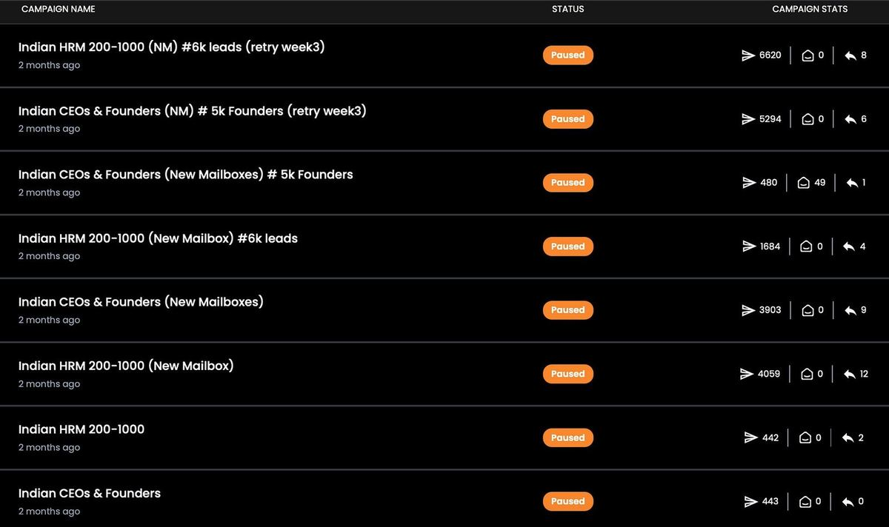
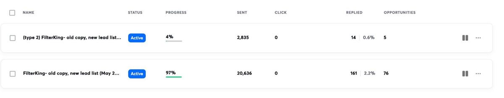

Most Clay tables we audit have the same shape. The expensive columns sit near the left and run on every row the moment the table fills. The filter that would have removed half of those rows sits at the far right, after the money is spent. The credit bill is high, the list is no better for it, and the person running the table usually blames the data provider. In almost every case the fix is to reorder the columns. This post walks through the order we use at Sparq Labs and teach in the list engine machine (M2): the rule, the full column sequence, the run conditions that enforce it, where AI is worth paying for, and the mistakes we see most often.
The rule in one line
Run deterministic, cheap steps first. Filter. Then spend.
A deterministic step gives the same answer every time for the same input: a headcount, a country, whether a job post exists. A cheap step costs little or nothing per row. A paid enrichment costs credits for each row it runs on. An AI step usually costs the most per row, because it reads a lot of text and writes some back.
Paid columns charge for every row they run on, whether or not that row survives to the end of the table. Deleting it later refunds nothing. So the lever that matters is how many rows reach each paid column. Every row that fails a cheap check should stop there.
Why order matters more than provider
Teams that hit a big credit bill usually go shopping for a cheaper provider. That shaves a little off each lookup. Reordering the table changes how many lookups happen at all, which is a much bigger number. The row counts below are illustrative. Measure your own.
| Stage | Rows reaching it (illustrative) | What removed the rest |
|---|---|---|
| Imported | 10,000 | Nothing yet |
| Exclusions and firmographic filter | 4,000 | Wrong size, wrong country, existing customers |
| Signal check | 1,200 | Good fit, nothing happening this month |
| Contact find | 1,000 | No suitable person |
| Email waterfall and verification | 800 | No verified address |
Put the AI column first and it runs 10,000 times. Put it last and it runs 800 times, roughly a twelfth of the AI spend, before you change a single provider. The same logic applies to every paid column in between.
The second saving is harder to see on an invoice. The rows you filter out early are the rows that would have produced bad sends. Removing them protects your reply rate and your sending domains as well as your credits. The sending infrastructure post covers why those domains are worth protecting.
The column order we use
This is our default for a new table. We adjust it for unusual segments, but every change keeps the rule: nothing paid runs on a row a cheaper column could have removed.
| # | Stage | Typical columns | Runs on |
|---|---|---|---|
| 1 | Import and dedupe | Domain, company, LinkedIn URL | Everything |
| 2 | Exclusions | Customer, open deal, recently contacted, competitor | Deduped rows |
| 3 | Firmographic filter | Headcount, country, industry, one "fit" formula | Rows not excluded |
| 4 | Signal check | Hiring, new leader, funding, tool change, with evidence | Fit is true |
| 5 | Tier | T1, T2 or T3 formula | Rows that passed 4 |
| 6 | Contact find | Person, title, LinkedIn URL | T1 and T2 only |
| 7 | Email waterfall | Provider A, B, C, then verify | Rows with a contact |
| 8 | AI research | First line, evidence used | Verified email |
| 9 | Push | Sequencer and CRM | Usable first line |
1 and 2. Import, dedupe, exclude
Pull the raw list from the cheapest source you can, usually an Apollo search with firmographic filters applied, or a CRM export. Dedupe on domain before anything runs. Duplicates double every paid column and put two near-identical emails in front of one account. Then remove the rows you should never send to: customers, open deals, accounts a teammate already works, competitors and anyone contacted recently. Those lists live in HubSpot and in past campaign exports, and a lookup against a list you own costs nothing.
3. Firmographic filter
Headcount band, country, industry. Most of this arrives with the source data, so these columns are formulas. Fill gaps with the cheapest lookup available. Combine the checks into one "fit" column that returns true or false. In most tables this step removes the largest share of rows for almost no spend.
4. Signal check
This is where the ICP becomes a list. "Fast-growing B2B SaaS" cannot be run by a table. "Hiring three SDRs this month" can, and so can a new VP Sales, a funding round or a tool added to the stack. We scrape careers pages and job boards with Apify, read job titles with a formula, and use Clay's own signal sources where they cover the segment.
Each signal becomes two columns: a yes or no, and the evidence. The evidence is the job post title and URL, the new leader's name and start date, the tool's name. Keep it. The research agent reads it, and the trigger line in the three-step cadence is written from it.
5. Tier
A formula turns signals into priority. T1 is two or more signals, or one strong one, such as hiring for the exact role you sell into. T2 is one weaker signal. T3 fits the firmographics with nothing happening. T3 rows stop here. Park them and re-run the signal check next month. Sending to them now spends credits and mailbox capacity on people the copy has nothing true to say to.
6. Contact find
Only now do we look for a person. Apollo finds the right title at accounts that passed stages 3 to 5. Match the title to the signal: SDR hiring points to the head of sales, or the founder at a small company; a new tool points to whoever owns it. One or two contacts per account is enough. Five contacts multiplies every later column by five.
7. Email waterfall
Provider A, then B, then C, stopping at the first verified result. We usually lead with Prospeo and fall through to others. Order providers by your own hit rate on your own segment, and recheck the order every few months. Each provider after the first needs a run condition so it only fires when the ones above came back empty. Finish with verification and drop anything invalid or risky. A bounce also costs sender reputation, and that is slow to rebuild.
8 and 9. AI research, then push
The most expensive column per row runs last, on the fewest rows. A Claude prompt reads the stage 4 evidence plus a short website summary and writes one first line, with the fact it relied on. Rows with a verified email and a usable line go to the sequencer (EmailBison, Smartlead or Instantly, depending on the programme) and to HubSpot. Rows where the agent returned nothing go to a review view. They never go out with a generic opener.
Run conditions do the enforcing
The order of columns on screen means nothing on its own. A column on the far right still runs on every row unless you tell it otherwise. What enforces the waterfall is the "only run if" condition on each paid column, and each one points at the stage before it:
Signal scrape run if: Excluded = false AND Fit = true
Contact find run if: Tier is T1 or T2
Email: provider A run if: Contact LinkedIn URL is not empty
Email: provider B run if: Provider A email is empty or invalid
Email: provider C run if: Provider A and B are both empty or invalid
Verify run if: Best email is not empty
AI first line run if: Verified = true AND Signal evidence is not empty
Push to sequencer run if: First line is not empty AND First line != "NONE"Three habits keep these reliable.
- Point conditions at one fit column. Repeat headcount and country logic in five places and one of them will drift when the ICP changes.
- Turn auto-run off while you build. Run each paid column on ten rows, read the output, then let it run. A wrong condition on a full table is an expensive way to find a typo.
- Add a "best email" column. A formula that picks the first valid waterfall result. Verification and push read that one column, so reordering providers later breaks nothing.
Where AI earns its cost
AI is worth paying for when its output changes what you send. In our tables that means three jobs.
- Writing the first line from evidence. A sentence built from the account's own facts. No formula writes this well, and it is the line the reader sees first.
- Routing an account to a sequence. Reading a homepage to decide whether the company sells to agencies or enterprises, so it gets the right copy.
- Reading messy text. Pulling "they are building an outbound team for the US" out of a long job post is a fair job for a model.
AI is a poor use of credits when a cheap lookup already knows the answer. We regularly find AI columns estimating company size, guessing country from a website or tidying job titles. Each has a deterministic source or a formula that does it for nothing, the same way every time.
The research prompt, in outline
A good research prompt is narrow: evidence fields in, a strict output format, and permission to give up.
Inputs:
company_name, domain
signal_type (hiring_sdr, new_leader, new_tool, funding)
signal_evidence (job post title + URL, or leader name + start date)
homepage_summary (scraped and cleaned)
Task:
Write one sentence, under 20 words, that tells the reader at
{{company_name}} why we are writing now. Use only facts from
signal_evidence. Do not compliment. Do not mention our product.
Output (JSON):
first_line: the sentence, or "NONE" if the evidence does not support one
evidence_used: the exact fact the sentence relies onThe "NONE" option matters most. A model told it must always produce a line will invent one when the evidence is thin, and invented first lines are how cold email ends up sounding like cold email. Before the column runs on the whole table, read twenty outputs by hand with the evidence beside each. In the week 3 build we do exactly that on screen.
Count credits per sent row
The number to watch is credits spent divided by rows that reached the sequencer. Credits per table row tells you very little. A table full of filtered-out rows can look cheap per row and still waste most of its spend on accounts nobody emailed.
Add a "stage reached" formula that returns the last stage each row passed. Then, once a week:
- Count rows at each stage. A large drop late in the table is a filter in the wrong place.
- Compare runs to sends for each paid column. If a paid column ran on many rows that were later removed, the filter that removed them belongs above it. Move it up.
- Check each provider's hit rate. If the second provider finds most addresses on this segment, swap the order.
- Check how often the AI returns "NONE". A high rate means the signal stage lets through thin evidence. Tighten it before you touch the prompt.
This is also the number to report upward. It sits on the M6 scoreboard next to sends, replies and opportunities.
A worked example
Take a fictional seller whose buyers are Indian B2B SaaS companies with 20 to 200 staff, at the moment they start building an outbound team. Signals: SDR hiring, a new head of sales, a new sales tool. Five rows and where each stopped:
| Account | Fit | Signal | Tier | Outcome |
|---|---|---|---|---|
| fintech-saas.io | Yes | Hiring 3 SDRs | T1 | Verified by provider A, first line written, sent |
| logitech-ops.com | Yes | New VP Sales | T1 | Verified by provider B, first line written, sent |
| hrtech-labs.in | Yes | Bought Clay | T2 | No verified email, stopped at stage 7, no AI spend |
| quiet-saas.io | Yes | None | T3 | Parked for next month |
| big-retail.co | No | Not checked | Stopped at stage 3, no spend |
Five rows, two AI calls, both on rows that were sent. The cheap columns did most of the deciding. The first line for fintech-saas.io came out as "Saw three SDR roles open on your careers page this week", built from the job post titles in its evidence column. Nobody researched the account by hand.

Why the list decides more than the copy
Credit savings are the visible win. The bigger one is what a tighter list does to results. Three Sparq Labs client programmes show it.
- FilterKing kept the same copy and rebuilt the list. One campaign produced 76 opportunities, and 47% of its replies became opportunities.
- Sufix Tech moved a VA-staffing pitch from a 0.84% to a 6.0% reply rate by targeting agencies with open roles.
- HappyFolks ran eight wide tests at under 0.3%, then went narrow and reached 6.7%, with 25 opportunities from 549 contacts.
Each change started with a better answer to "who, and why now", which is what this table produces.

Common mistakes
- AI first, filter last. The AI column runs on the full import, and the headcount filter removes most of those rows afterwards.
- A waterfall without conditions. Three providers with no "only run if" means three charges for one address.
- Exclusions at the end, or never. Customers and open deals get enriched, researched and sometimes emailed. Sales notices.
- Throwing away the evidence. A signal stored as "yes" with no URL leaves the agent nothing to write from.
- Sending T3 anyway. No signal means no trigger line, a lower reply rate, and mailbox capacity a T1 account could have used.
- One table for every segment. Segments need different signals, titles and providers. Build one table per segment from a shared template.
- Judging the table by credits per row. Judge it by credits per sent row, and by the replies those rows produced.
The pre-run checklist
- The ICP is written as signals, and each signal has an evidence column.
- The import is deduped on domain, and exclusions run before any paid column.
- One "fit" formula exists, and later conditions point at it.
- T3 rows are parked with a date to re-check.
- Contact find runs on T1 and T2 only, with titles matched to the signal.
- Every provider after the first checks the ones above it, and verification runs before the AI column.
- The research prompt can return "NONE", and twenty outputs have been read by hand.
- A "stage reached" column exists, so credits per sent row can be counted on Monday.
Where this fits
The list engine is M2 of the six machines. It feeds the research agent and the copy. A good table makes both easy: the agent has evidence to read, and the three-step cadence has a true trigger line to open with.
Week 2 of both programmes is this machine: your ICP as signals, your first Clay table, the waterfall in the right order, credits counted, with your table on screen. If you want to build all six on a live account with someone reviewing them, there are two programmes. In India, Lieutenant is eight weeks with weekly 1:1 co-builds with Nish on your own pipeline, at ₹3.8L including GST, with EMI over 12–24 months. Outside India, the International Programme runs the same curriculum in two time-zone slots at $6,000. Both are compared on the pricing page.